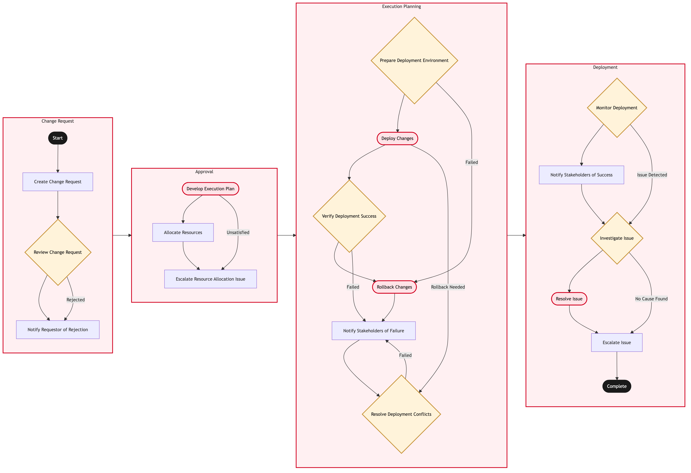

Updated 2026-08-21
Change and Release Management
Process flow
Click to zoom

Process steps
▼
Phase 1 — Change Request
3 steps
| Step | Activity | Role | System | Input | Output | KPI | Dec | Exc | Pain point |
|---|---|---|---|---|---|---|---|---|---|
| 1.1 | Create Change Request | ITSM Analyst | ITSM PlatformC | Business justification, impact analysis | Change request ticket | Time to create change request < 2 hours | N | N | Manual data entry errors leading to delays |
| 1.2 | Review Change Request | ITSM Manager | ITSM PlatformC | Change request ticket | Approval or rejection | Time to review change request < 4 hours | Y | N | Overloaded managers unable to review all requests promptly |
| 1.3 | Notify Requestor of Rejection | ITSM Analyst | Email SystemU | Change request ticket | Notification email | Time to notify < 1 hour | N | N | Email delivery failures causing delays |
▼
Phase 2 — Approval
3 steps
| Step | Activity | Role | System | Input | Output | KPI | Dec | Exc | Pain point |
|---|---|---|---|---|---|---|---|---|---|
| 2.1 | Develop Execution Plan | ITSM Analyst | ITSM PlatformC | Approved change request | Execution plan document | Time to develop plan < 8 hours | N | Y | Resource allocation issues leading to delays |
| 2.2 | Allocate Resources | ITSM Manager | ITSM PlatformC | Execution plan document | Resource allocation list | Time to allocate resources < 4 hours | N | N | Inadequate resource availability causing delays |
| 2.3 | Escalate Resource Allocation Issue | ITSM Manager | Email SystemU | Resource allocation issue | Escalation email to IT Director | Time to escalate < 1 hour | N | N | No immediate resolution for resource issues |
▼
Phase 3 — Execution Planning
6 steps
| Step | Activity | Role | System | Input | Output | KPI | Dec | Exc | Pain point |
|---|---|---|---|---|---|---|---|---|---|
| 3.1 | Prepare Deployment Environment | DevOps Engineer | AWSA | Execution plan document | Prepared environment | Time to prepare environment < 6 hours | Y | N | Configuration errors leading to deployment failures |
| 3.2 | Deploy Changes | DevOps Engineer | AWSA | Prepared environment | Deployment status | Time to deploy changes < 10 hours | N | Y | Deployment conflicts causing rollback needs |
| 3.3 | Verify Deployment Success | ITSM Analyst | ITSM PlatformC | Deployment status | Verification report | Time to verify < 2 hours | Y | N | Manual verification errors leading to false positives/negatives |
| 3.4 | Rollback Changes | DevOps Engineer | AWSA | Deployment status | Rollback status | Time to rollback < 8 hours | N | Y | Data loss during rollback process |
| 3.5 | Notify Stakeholders of Failure | ITSM Analyst | Email SystemU | Verification report | Notification email | Time to notify < 1 hour | N | N | No immediate resolution for deployment issues |
| 3.6 | Resolve Deployment Conflicts | DevOps Engineer | AWSA | Deployment status | Resolved environment | Time to resolve conflicts < 4 hours | Y | N | Complex conflict resolution leading to extended downtime |
▼
Phase 4 — Deployment
5 steps
| Step | Activity | Role | System | Input | Output | KPI | Dec | Exc | Pain point |
|---|---|---|---|---|---|---|---|---|---|
| 4.1 | Monitor Deployment | ITSM Analyst | ITSM PlatformC | Deployment status | Monitoring report | Time to monitor < 2 hours | Y | N | Real-time monitoring tools not available causing delays |
| 4.2 | Notify Stakeholders of Success | ITSM Analyst | Email SystemU | Monitoring report | Notification email | Time to notify < 1 hour | N | N | No immediate resolution for monitoring issues |
| 4.3 | Investigate Issue | ITSM Analyst | ITSM PlatformC | Monitoring report | Investigation findings | Time to investigate < 4 hours | Y | N | Complex investigations leading to extended downtime |
| 4.4 | Resolve Issue | ITSM Analyst | ITSM PlatformC | Investigation findings | Resolution status | Time to resolve < 2 hours | N | Y | No immediate resolution for investigation issues |
| 4.5 | Escalate Issue | ITSM Manager | Email SystemU | Investigation findings | Escalation email to IT Director | Time to escalate < 1 hour | N | N | No immediate resolution for issue escalation |
Swim lanes
ITSM Analyst1.1 1.3 2.1 3.3 3.5 4.1 4.2 4.3 4.4
ITSM Manager1.2 2.2 2.3 4.5
DevOps Engineer3.1 3.2 3.4 3.6
Systems touched
ITSM PlatformCEmail SystemUAWSA
Key performance indicators
- Average time to create change request: 2 hours
- Average time to review change request: 4 hours
- Average time to develop execution plan: 8 hours
- Average time to allocate resources: 4 hours
- Average time to prepare deployment environment: 6 hours
Risks and control points
- Resource allocation issues leading to delays
- Configuration errors during deployment preparation
- Deployment conflicts causing rollback needs
- Data loss during rollback process
- Complex conflict resolution leading to extended downtime
Air Canada Process Wiki — process and systems reference compiled from public sources
for IT Application Management and User Support pre-sales discovery.
Built 2026-08-21. Every system carries an evidence tier: tier C is an industry pattern and tier U is an open
question, and neither should be asserted as fact about Air Canada without confirmation in discovery.
Not affiliated with or endorsed by Air Canada. Air Canada, Aeroplan and Altitude are trademarks of Air Canada.